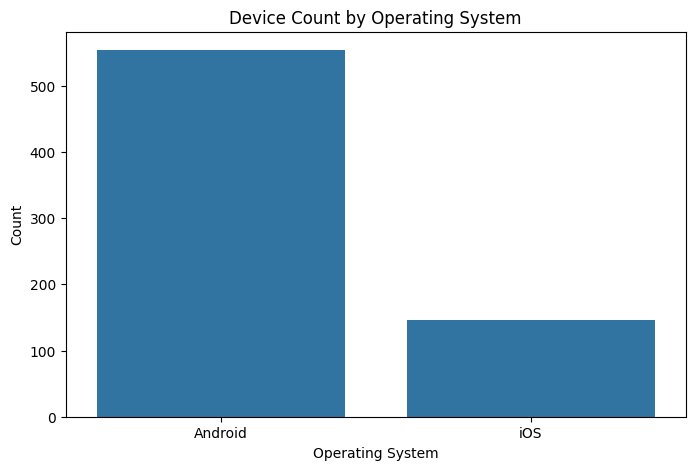
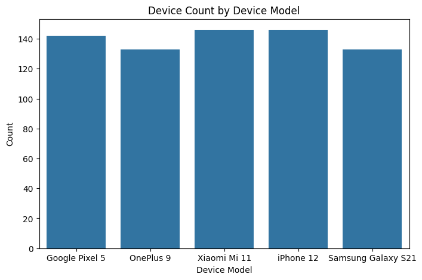

import pandas as pd
import numpy as np
import matplotlib.pyplot as plt
import seaborn as snsdataset: mobile-device-usage-and-user-behavior-dataset
source: https://www.kaggle.com/datasets/valakhorasani/mobile-device-usage-and-user-behavior-dataset
This dataset provides a comprehensive analysis of mobile device usage patterns and user behavior classification. It contains 700 samples of user data, including metrics such as app usage time, screen-on time, battery drain, and data consumption. Each entry is categorized into one of five user behavior classes, ranging from light to extreme usage, allowing for insightful analysis and modeling.
#data = pd.read_csv('data/Mobile_user_behavior_dataset.csv')
url = "https://raw.githubusercontent.com/INFO-511-F24/final-project-ChilePeppers/main/data/Mobile_user_behavior_dataset.csv"
data = pd.read_csv(url)
data.head()| User ID | Device Model | Operating System | App Usage Time (min/day) | Screen On Time (hours/day) | Battery Drain (mAh/day) | Number of Apps Installed | Data Usage (MB/day) | Age | Gender | User Behavior Class | |
|---|---|---|---|---|---|---|---|---|---|---|---|
| 0 | 1 | Google Pixel 5 | Android | 393 | 6.4 | 1872 | 67 | 1122 | 40 | Male | 4 |
| 1 | 2 | OnePlus 9 | Android | 268 | 4.7 | 1331 | 42 | 944 | 47 | Female | 3 |
| 2 | 3 | Xiaomi Mi 11 | Android | 154 | 4.0 | 761 | 32 | 322 | 42 | Male | 2 |
| 3 | 4 | Google Pixel 5 | Android | 239 | 4.8 | 1676 | 56 | 871 | 20 | Male | 3 |
| 4 | 5 | iPhone 12 | iOS | 187 | 4.3 | 1367 | 58 | 988 | 31 | Female | 3 |
print(data.info)--------------------------------------------------------------------------- NameError Traceback (most recent call last) Cell In[10], line 1 ----> 1 print(data.info) NameError: name 'data' is not defined
Topic Interest:
Investigate user behavior and engagement patterns on mobile devices, focusing on usage patterns, app preferences, and screen time. The dataset is ideal for studying how users interact with technology, which is valuable for both behavioral and marketing insights.
Justification:
Familiarity: Mobile usage data is commonly explored, so there’s plenty of context to draw from.
Rich Explanatory Variables: Includes unique columns like app usage duration, screen unlock counts, and screen time, providing multiple angles for analysis.
Insight Potential: Analyzing device usage can reveal insights into user habits, preferences, and potential areas for app or service improvements.
print(data.head(10)) User ID Device Model Operating System App Usage Time (min/day) \
0 1 Google Pixel 5 Android 393
1 2 OnePlus 9 Android 268
2 3 Xiaomi Mi 11 Android 154
3 4 Google Pixel 5 Android 239
4 5 iPhone 12 iOS 187
5 6 Google Pixel 5 Android 99
6 7 Samsung Galaxy S21 Android 350
7 8 OnePlus 9 Android 543
8 9 Samsung Galaxy S21 Android 340
9 10 iPhone 12 iOS 424
Screen On Time (hours/day) Battery Drain (mAh/day) \
0 6.4 1872
1 4.7 1331
2 4.0 761
3 4.8 1676
4 4.3 1367
5 2.0 940
6 7.3 1802
7 11.4 2956
8 7.7 2138
9 6.6 1957
Number of Apps Installed Data Usage (MB/day) Age Gender \
0 67 1122 40 Male
1 42 944 47 Female
2 32 322 42 Male
3 56 871 20 Male
4 58 988 31 Female
5 35 564 31 Male
6 66 1054 21 Female
7 82 1702 31 Male
8 75 1053 42 Female
9 75 1301 42 Male
User Behavior Class
0 4
1 3
2 2
3 3
4 3
5 2
6 4
7 5
8 4
9 4 data['Device Model'].unique()array(['Google Pixel 5', 'OnePlus 9', 'Xiaomi Mi 11', 'iPhone 12',
'Samsung Galaxy S21'], dtype=object)plt.figure(figsize=(8, 5))
sns.countplot(x='Operating System', data=data)
plt.title('Device Count by Operating System')
plt.xlabel('Operating System')
plt.ylabel('Count')
plt.show()
plt.figure(figsize=(8, 5))
sns.countplot(x='Device Model', data=data)
plt.title('Device Count by Device Model')
plt.xlabel('Device Model')
plt.ylabel('Count')
plt.show()